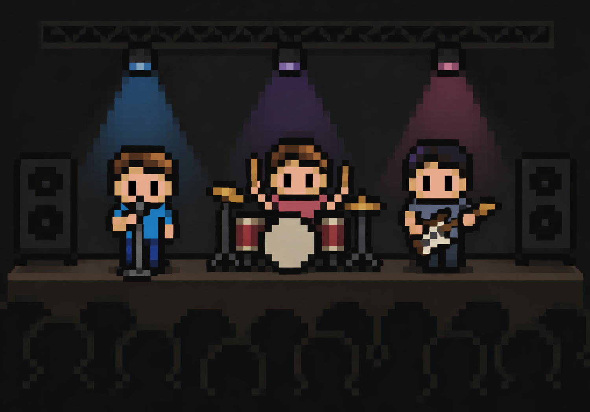
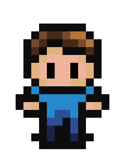
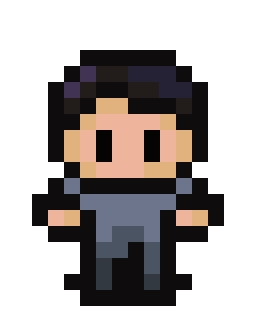
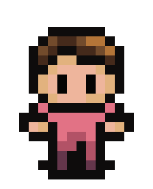

O nama
Naša priča
Priča o bendu KRONOS započela je prije nekoliko godina u Velikoj Gorici. Projekt su osmislili braća blizanci, Samuel i Eli, kao izraz svoje zajedničke strasti prema glazbi. Iako smo projekt pokušali pokrenuti više puta, životne okolnosti i prepreke stalno su nas vraćale na početak. Pravi preokret dogodio se preseljenjem iz Velike Gorice u Zadar. Dolazak u novu sredinu donio je svježinu i energiju koja nam je nedostajala. U Zadru smo upoznali Dinu, koji je svojom vještinom na žičanim instrumentima savršeno upotpunio naš zvuk. Tako je 2025. godine KRONOS konačno postao stvarnost.

Nastup u Zadarskom bunkeru.
Članovi benda

Eli - Vokal i gitara. Samuelov brat blizanac, zadužen za pjevanje, background gitaru, a po potrebi preuzima i električnu gitaru.

Dino - Električna i bas gitara. Dino je multiinstrumentalist koji svojim dionicama na električnoj i bas gitari daje bendu prepoznatljivu rock čvrstinu.

Samuel - Bubnjevi i klavir. On je ritmičko srce benda, a osim sviranja, zadužen je za kompletnu produkciju, snimanje i uređivanje cijelog audio materijala.
Znate dobro svirati bas gitaru? Zainteresirani ste za uključivanje u naš bend? Prijavite se!
Kontaktirajte nas!